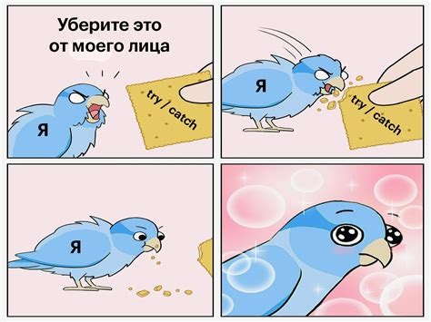

Мем (англ. meme) — единица значимой для культуры информации. Мемом является любая идея, символ, манера, ситуация или образ действия, осознанно или неосознанно передаваемые от человека к человеку посредством речи, письма, видео, ритуалов, жестов и т. д. Термин «мем» и его понимание были введены эволюционным биологом Ричардом Докинзом в 1976 году в книге «Эгоистичный ген». Докинз предложил идею о том, что вся значимая для культуры информация состоит из базовых единиц — мемов, точно так же как биологическая информация состоит из генов. Так же какгены, мемы подвержены естественному отбору, мутации и искусственной селекции. На основе этой идеи Докинза возникла дисциплина меметика, в настоящее время имеющая спорный научный статус.
Не смотря на то, что изначально мем считается идеей или единицей культуры информации, в современности чаще всего мемом называют картинку, видео, или серию картинок (смотреть ниже) созданных с целью развеселить пользователя, или обратить на себя внимание. В связи с чем, обычно, первое что приходит на ум среднему пользователю интернета при слове "мем", это смешная картинка, скорее всего с текстом снизу.
Распространение мема зависит напрямую от количества людей распространающих его, что в свою очередь зависит его релевантности и актуальности на данный момент. Например, информация про застрявший в Суэцком канале контейнеровоз «Эвер Гивен» породил огромное количество мемов разных направлений (смотреть ниже). Перевод: Когда отменил свою доставку на полпути из Китая. Сама авария продлилась с 23 марта 2021 года по 29 марта 2021 года, что вызвало многодневный коллапс мировых грузоперевозок, обходившийся мировой торговле в 400 млн долл. в час. На протяжении этого времени популярность мема связанного с Evergreen была на своем пике, но после того, как контейнеровоз был высвобожден и Суэцкий канал снова был открыт мемы со временем перестал появляться в медиа.